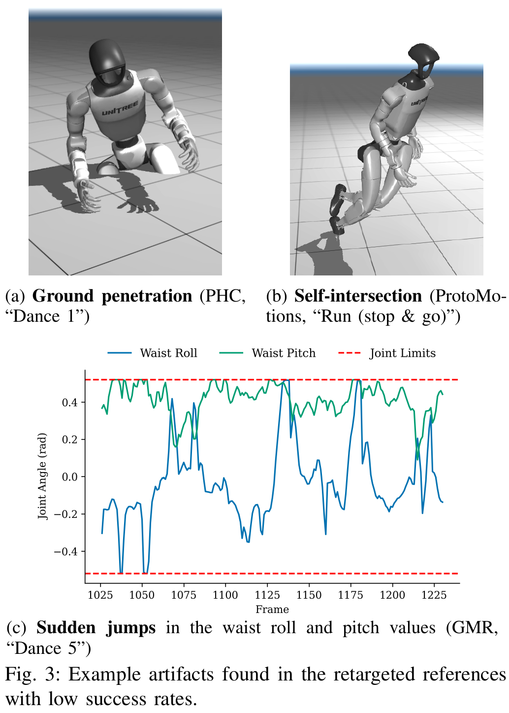
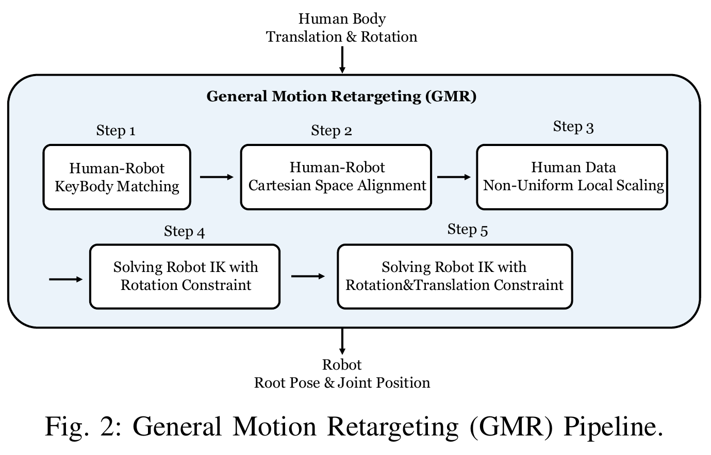
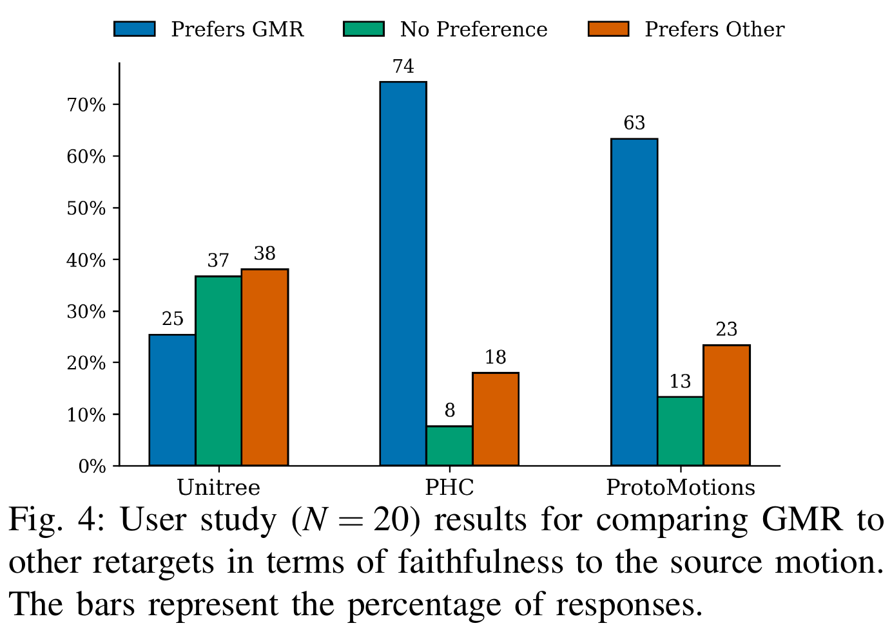

仿真
21 条 LAFAN1 运动、每条单独训练策略。平均全局位置误差：GMR 104.1 mm，PHC 247.8，ProtoMotions 139.7，Unitree 77.2。
人体动作换到 G1 后的穿地、自相交和关节跳变，会变成 RL 的互相冲突的学习目标。GMR 用分部位局部缩放 + 两阶段 IK改善参考；论文的关键贡献还在于固定 BeyondMimic 配方，观察重定向质量如何改变策略表现。
证据：§III–V，Table I–III，pp.3–7。固定版本 · 官方代码快照 bb1bbe4 · PDF 哈希与图源
高层想要的是“同一种动作”，不是复刻人体坐标。先区分外形相似、关节可达、动力学可跟踪，才能判断误差发生在哪一层；这篇没有把三者视为同一件事。
人和机器人骨长、关节拓扑、活动范围、质量分布都不同。把人体姿态原样搬过去，好比把一个人的衣服尺寸直接当成另一个人的关节约束：局部看起来对，脚却可能进入地板。RL 同时收到“追参考”和“不要摔倒”的要求，只有妥协或失败。
| 问题 | 回答 |
|---|---|
| 背景 | 全身 tracking 是遥操作和分层控制的基础，人类运动是可扩展参考来源。 |
| 直接依赖 | PHC：SMPL 形状拟合 + 位置 IK；ProtoMotions：按世界轴缩放 + Mink；BeyondMimic：统一训练与评测 tracker。 |
| 具体失败 | PHC Dance 1/2 穿地；ProtoMotions stop-and-go 跑步腿部自相交；GMR Dance 5 腰部突跳。 |
| 押注 | 先修参考，能在不逐动作调奖励的条件下改善可跟踪性。作者不是声称 reward engineering 永远无效。 |
| 效果与代价 | 开源方法中更低的平均 tracking error、更高保真偏好；仍需人工匹配、尺度/权重选择，且只做运动学优化。 |

IK 只会逼近你提供的目标。如果目标本身被错误缩放，求解得再准也没有用。本节先确定目标，再讨论求解器。

解释性算例，非论文实验：α=1，根 x=1.0 m，手 x=1.5 m；根比例 0.9、手比例 0.75，目标手 x=0.75×0.5+0.9=1.275 m。若把世界坐标直接乘 0.75，则得到 1.125 m，连根的行走位移也被改了。
身体通常无法同时满足所有目标。权重选择优先保谁，阻尼限制局部步幅，硬约束限定允许区域。它们不能互相替代，更不能代替正确的标定。
论文第一阶段主要对齐各关键体朝向与手脚位置，第二阶段再纳入全身位置目标并换一组权重。两阶段的直觉是先让链条朝对方向，再用位置微调减少局部极小值。每帧沿用上一帧解，但暖启动不等于显式速度连续性约束。
无约束的线性小步解为 δq = −(JᵀWJ + λI)⁻¹JᵀWe。真实 GMR 调用 Mink 的速度 IK，并用 integrate_inplace(velocity, dt) 更新。论文提醒 Δt 是求解器参数，不一定等于视频帧间隔。
教学模型仅有一个修正量 Δq。手目标要求 +0.2，保姿希望 0；把局部 Jacobian 归一化为 1。最小化 wₕ(Δq−0.2)² + 1·Δq² + λΔq²，并要求 0 ≤ Δq ≤ cap。闭式解是 min(cap, 0.2wₕ/(wₕ+1+λ))。
| wₕ | λ | cap | Δq | 解释 |
|---|---|---|---|---|
| 1 | 0 | 0.2 | 0.1000 | 手和保姿各让一步 |
| 25 | 0 | 0.2 | 0.1923 | 更偏手目标，姿态改变更大 |
| 25 | 25 | 0.2 | 0.0980 | 阻尼压小局部修正 |
| 25 | 0 | 0.08 | 0.0800 | 硬限幅生效，增加权重也不能越界 |
归一化残差是为了手算；这里的 wₕ 是目标函数系数，不等同于 Mink 的 position_cost 数值。阻尼在完整非线性迭代中影响收敛，不代表必然永久保留同样偏差。
先查时钟、尺度、根平移、脚底定义和 frame offset。只有目标几何正确而优化仍让步时，增大权重才在解决对的问题。随后还要查速度峰值、自碰撞和实际 controller replay。
上节告诉我们调参的方向；本节确认固定提交实际用了什么。代码可能已晚于论文，下面的不一致作为版本差异保留，不擅自判断哪一个代表作者当年的实验。
| 位置 / 参数 | 实际含义 | 易误读之处 |
|---|---|---|
__init__ | solver=daqp，damping=0.5；FrameTask 的 lm_damping=1。 | 两个 damping 不是同一个参数；旁边的旧注释不优先于可执行默认值。 |
ik_limits | ConfigurationLimit 默认开启；VelocityLimit 可选，默认关闭，开时为 3π。 | 此函数没有默认碰撞约束或动力学平衡保证。 |
| match table 1 → 2 | 脚踝 position/orientation cost 为 50/10；腕部从 0/10 变为 10/5；骨盆从 0/10 变为 100/5。 | 论文“阶段一包含手脚”是一般形式；该 BVH→G1 配置第一阶段腕位置权重实际为 0。 |
retarget | 每阶段先求解一次，再最多循环 10 次；按误差改善 >0.001 继续。 | 因此该实现最多可达 11 次调用，不等于论文描述的最多 10 次。 |
update_targets | 目标先使用 table1 的 offsets，两个阶段复用目标；table2 offsets 虽被读入，但这里未另用。 | 当前所核配置两表 offsets 相同；若未来调 table2 offset，需检查这条代码路径。 |
| 地面校正 | 论文描述整段 FK 最低高度平移；当前类另有可选逐帧脚点贴地与手工 ground offset。 | 完整离线导出要连同调用脚本核对，不能拿一个可选函数替代论文的序列处理。 |
motion_retarget.py · bvh_lafan1_to_g1.json。论文 p.5 用 exp 描述 SO(3) 差的 so(3) 表达，记号不规范；本页用旋转 Log / rotation vector 解释，不将其照抄成实现。
改善 IK 并不自动证明策略更好。本节分别检查整段完成、存活帧 tracking error 和人的动作保真偏好，最后指出这些证据没有跨过的部署边界。
| 场景 | 任务 / 划分 | 观测 / 动作 / 时域 | 次数与指标 | 结论与公平性 |
|---|---|---|---|---|
| IsaacSim sim | 21 条 LAFAN1，G1；每条参考独立训练，不是统一策略 held-out split | BeyondMimic tracker；本文未完整列出观测维数/控制 Hz。每条 5.5–130.5 s，违背 anchor 高度/朝向阈值早停，阈值数值未在本版列全。 | 100 rollouts / policy；整段完成率；位置 mm、关节角 10⁻³ rad | 固定配方；PHC/PM 还需要 BVH→SMPL(-X) 转换，GMR 直接用 BVH，输入链并非逐环节完全相同。 |
| IsaacSim sim-dr | 相同参考；打开 domain randomization | 参考与控制器不变，测参数/观测扰动鲁棒性 | 4096 rollouts / policy | 不应称为未见任务成功率；训练 seeds 数未报告。 |
| MuJoCo + ROS sim2sim | 相同参考；不同模拟器及估计/通信路径 | 默认站姿启动；不读特权全局根姿态；参考完整时域 | 100 rollouts / policy | 可安全模拟部署路径，但不是物理机器人测试。 |
| 维度 | 对照与结果 | 可比较范围 |
|---|---|---|
| 观测 / 参数扰动 | GMR Dance 5：sim 96%，sim-dr 92.75% | 不同试验量、复合扰动，不计算 ID/OOD 保留率；不能隔离哪个噪声导致下降。 |
| 模拟器 / 时序迁移 | Dance 5 sim2sim 51%；Run stop-and-go 为 100% | 不同模拟器协议，不把变化只归因于 retargeter。 |
| 初始参考帧 | Walk 2 从 frame 0 改为 7：GMR 64%→100% | Table III，p.7；Table I 星号结果采用修正起帧，不能忽略该处理。 |
| 未见对象 / 复杂交互 / 机器人本体 | 未报告 | 仅 G1、LAFAN1；没有对象交互 benchmark。 |
| 平台 | 任务成功数 / 总数 | 完成时间 / 人工干预 / 安全停止 | 可支持结论 |
|---|---|---|---|
| 本文未报告物理机器人定量测试 | 未报告；不能计算 Wilson 区间 | 未报告 | 只能使用仿真与用户研究证据，不能把 ROS rollout 记成 G1 真机。 |
| 动作 | PHC | GMR | ProtoMotions | Unitree |
|---|---|---|---|---|
| Walk 1 | 100 | 100 | 100 | 100 |
| Walk 2* | 100 | 100 | 100 | 100 |
| Turn 1* | 100 | 100 | 99 | 100 |
| Turn 2 | 99 | 100 | 100 | 99 |
| Walk old | 100 | 100 | 100 | 100 |
| Walk army | 100 | 100 | 99 | 100 |
| Hop | 100 | 100 | 100 | 100 |
| Walk knees | 100 | 100 | 100 | 100 |
| Dance 1 | 0 | 100 | 100 | 100 |
| Dance 2 | 0 | 100 | 100 | 100 |
| Dance 3 | 99 | 100 | 100 | 100 |
| Dance 4 | 99 | 100 | 100 | 100 |
| Dance 5 | 100 | 51 | 100 | 100 |
| Run slow | 100 | 100 | 100 | 100 |
| Run | 100 | 100 | 100 | 100 |
| Run stop & go | 74 | 100 | 26 | 100 |
| Hop around | 100 | 100 | 100 | 100 |
| Hopscotch | 100 | 100 | 100 | 100 |
| Jump and rotate | 99 | 100 | 100 | 99 |
| Kung fu | 100 | 100 | 100 | 100 |
| Various sports | 100 | 100 | 100 | 99 |

GMR 输出的是参考运动，不是天然兼容所有控制器的 action label。下一步要问：SONIC 的哪个 encoder 接收它？所需未来窗口、joint order、根坐标、单位和控制时钟是什么？再往上，WAM 学的是 token、关节目标还是末端位姿？名称同为 action 不能代替接口契约。